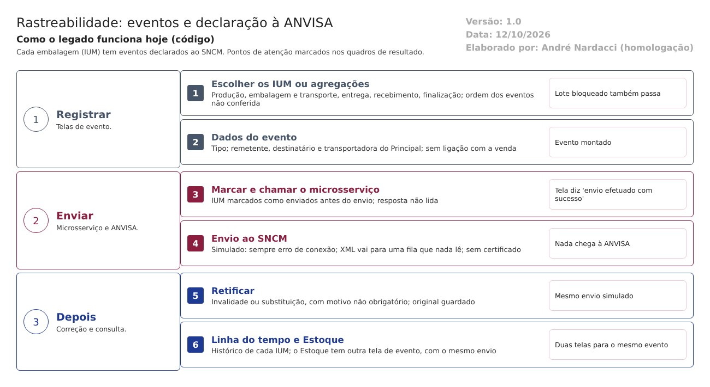

Objetivo
Este documento descreve como os eventos de cada embalagem são registrados na Rastreabilidade do LabMedSys e como deveriam ser declarados à ANVISA pelo Sistema Nacional de Controle de Medicamentos (SNCM).
Cada embalagem tem um IUM (Identificador Único de Medicamento). A vida dela é contada por eventos: - produção: o IUM "nasce"; - embalagem e transporte: caixas com vários IUM; - entrega e recebimento: a embalagem muda de mãos; - finalização: a embalagem deixa a cadeia (dispensação, baixa, perda, descarte).
Pelo documento da equipe (Documentação/processo de transmissão do IUM.txt):
- cada evento vai à ANVISA em XML assinado com certificado digital;
- a ANVISA devolve um protocolo, ou recusa o evento, por exemplo, uma expedição de IUM não ativado.
Foi montado a partir do código do sistema legado. O que depende da prática da área está marcado como a validar. Os casos de teste estão no fim.
Escopo
- As telas de evento: lista de eventos, produção, embalagem e transporte, entrega, recebimento, finalização e retificação.
- O envio ao microsserviço da Rastreabilidade e dele à ANVISA.
- Os eventos de entrega e recebimento enviados pelo Estoque.
- A linha do tempo de cada IUM.
Fora do escopo: a geração do IUM e a agregação (fluxo 1).
Nomes das telas: como aparecem no menu. Os caminhos de código são relativos a 8.rastreabilidade/app/. Para encurtar: Ev = HSolutions.Rastreabilidade.UI/Controllers/EventoController.cs, Svc/ = HSolutions.Rastreabilidade.Domain.Services/.
Visão geral do processo

- O usuário abre a tela do evento e lê ou digita os IUM (ou os códigos das agregações).
- Informa os dados do evento: tipo, remetente, destinatário, transportadora, conforme o evento.
- Ao salvar, o sistema marca os IUM com a nova situação, grava o evento e chama o microsserviço.
- O microsserviço monta o XML e tenta enviar à ANVISA. O envio é simulado e cai numa fila que nada lê.
- A tela mostra "envio efetuado com sucesso".
- Um evento enviado pode ser retificado: invalidado ou substituído, com motivo.
Descrição funcional das etapas
1. Registrar o evento
Regras de negócio
- RN001 – Os eventos e os IUM que cada um aceita (
Ev): - produção: IUM que não foi finalizado nem está agregado (linhas 165-190);
- embalagem e transporte: agregações pelo código, conferidas pelo validador de agregação (linhas 376-430);
- entrega e recebimento: IUM fora de agregação, ou agregações; o mesmo IUM não entra duas vezes no mesmo tipo de evento: "Evento já efetuado para esse código." (linhas 966-1016, 1400-1448);
- finalização: qualquer IUM ainda não finalizado (linhas 1665-1712).
- RN002 – A ordem dos eventos não é conferida. A entrega não exige que a produção tenha sido declarada; a finalização não exige entrega. A confirmar no teste. Pelo documento da equipe, a ANVISA recusa a expedição de IUM não ativado.
- RN003 – Na finalização, digitar um código de IUM que não existe cria um IUM novo ("IUM externo"), sem conferência, só pela consulta (
Ev:1672-1687). Logo depois, a tela lê o GTIN do produto desse IUM, que não existe (linha 1702). Inferência, a confirmar no teste: erro na tela. - RN004 – Tipos de cada evento (
HSolutions.Rastreabilidade.Domain/Enumeradores): - entrega: venda, transferência, doação, devolução, recolhimento, amostra grátis;
- recebimento: compra, transferência, doação, devolução, recolhimento, amostra grátis;
- finalização: dispensação, baixa, extravio, perda, descarte.
- RN005 – Entrega e recebimento exigem remetente, destinatário e transportadora com CNPJ, razão social, endereço, município, estado e país (
Svc/Validators/EventoEntregaValidator.cs,EventoRecebimentoValidator.cs). Os dados vêm das pessoas jurídicas do Principal (Ev:1449-1476). - RN006 – Nada liga a entrega à venda. O destinatário é escolhido livremente; não se confere se há uma fatura do Comercial para aquele cliente e aquele lote.
- RN007 – O IUM não acompanha a situação do lote. Um lote bloqueado, reprovado ou em recolhimento não impede os eventos.
Telas do sistema
| Módulo | Tela | Finalidade |
|---|---|---|
| Rastreabilidade | Evento Produção, Evento Embalagem Transporte, Evento Entrega, Evento Recebimento, Evento Finalização | Registrar cada evento |
2. Enviar à ANVISA
Regras de negócio
- RN008 – Ao salvar, a tela marca os IUM com a nova situação antes de enviar (por exemplo, "Enviado evento produção") e grava a linha do tempo de cada um (
Ev:230-250). - RN009 – A tela chama o microsserviço da Rastreabilidade (
Ev:257-259; o mesmo nas linhas 502, 697, 1181, 1588 e 1795). Se a chamada não der erro, marca o evento como "Enviado" e mostra "envio efetuado com sucesso" (linhas 261-262). A resposta do microsserviço não é lida. - RN010 – No microsserviço, o evento vira XML (
Svc/AnvisaService.cs), e a rotina de envio sempre devolve "erro de conexão", com o comentário "Simulando problema de Conexão com a Anvisa" (Svc/AnvisaHelper.cs:48-60). - RN011 – Com o erro, o XML vai para uma fila de mensagens e a resposta é "na fila" (
Svc/AnvisaHelper.cs:64-78). O serviço do Windows que deveria ler a fila e enviar é um esqueleto, com só um controlador de teste (HSolutions.Rastreabilidade.AnvisaWindowsService/Controllers/TesteController.cs). - RN012 – Não há no código certificado digital, assinatura do XML, endereço do serviço da ANVISA nem leitura de protocolo de retorno.
- RN013 – Se a chamada ao microsserviço der erro, o evento fica como "Falha no envio" (
Ev:265-269), mas os IUM continuam com a situação de enviados (RN008). A confirmar no teste. - RN014 – O microsserviço grava cada tentativa na tabela de registro dos envios, com o XML (
TBL_REGISTRO_ENVIO;Svc/AnvisaService.cs:79e seguintes). A rotina recebe a situação do envio, mas não a grava: a coluna da situação fica vazia (Svc/AnvisaHelper.cs:80-92). - RN015 – Na entrega e no recebimento, o microsserviço também grava o evento (
Svc/AnvisaService.cs:71, 120, 175, 226), e a tela grava de novo depois (Ev:718, 1202). Inferência, a confirmar no teste: cada entrega e cada recebimento ficam gravados duas vezes.
Telas do sistema
| Módulo | Tela | Finalidade |
|---|---|---|
| Rastreabilidade | Eventos (lista) | Consultar os eventos e a situação de cada um |
3. Eventos enviados pelo Estoque
Regras de negócio
- RN016 – O Estoque tem a sua própria tela de evento ANVISA, aberta a partir da remessa, com entrega e recebimento por IUM ou por agregação (
3.estoque/app/LaboSys_UI/estoque/remessa_ed.aspx.cs:1153;3.estoque/app/LaboSys_BLL/bllEventoAnvisa.cs:156-354). - RN017 – O Estoque chama o mesmo microsserviço e também não lê a resposta (
3.estoque/app/LaboSys_BLL/bllEventoAnvisa.cs:421-428). O envio cai na mesma simulação (RN010). - RN018 – A remessa gerada pela fatura do Comercial não gera evento de entrega (fluxo 3 do Comercial). A confirmar no teste.
Telas do sistema
| Módulo | Tela | Finalidade |
|---|---|---|
| Estoque | Evento ANVISA (a partir da Remessa de Material) | Entrega e recebimento pelo Estoque |
4. Retificar e consultar
Regras de negócio
- RN019 – Um evento pode ser retificado por declaração de invalidade ou por substituição, com motivo. O evento original fica guardado, ligado ao que o substituiu (
Ev:1746-1830;TBL_EVENTO_RETIFICACAO). Não há validação de que o motivo foi preenchido. - RN020 – A retificação passa pelo mesmo envio simulado (RN009 a RN011).
- RN021 – A linha do tempo de cada IUM mostra as situações por que ele passou, com data e usuário (
TBL_IUM_EVENT_TIMELINE;HSolutions.Rastreabilidade.UI/Controllers/TimeLineController.cs).
Telas do sistema
| Módulo | Tela | Finalidade |
|---|---|---|
| Rastreabilidade | Retificação (pela lista de eventos) | Invalidar ou substituir um evento |
| Rastreabilidade | Linha do tempo (pela pesquisa de IUM) | Histórico de cada IUM |
Pontos de atenção
1. Nenhum evento chega à ANVISA (RN010 a RN012). O envio é simulado, a fila não é lida, e não há certificado. Se a empresa for obrigada a declarar ao SNCM, está descumprindo a obrigação sem saber. A validar com Assuntos Regulatórios: a norma e os prazos do SNCM que valem para a empresa.
2. A tela afirma o que não aconteceu (RN009). "Envio efetuado com sucesso" e a situação "Enviado" são registros falsos. Isso fere a integridade dos dados (RDC 658/2022, art. 124; Guia 33/2020, 9.3.2.3). O Estoque faz o mesmo (RN017).
3. A situação dos IUM muda antes do envio (RN008, RN013). Mesmo quando o envio falha, os IUM aparecem como enviados.
4. Ordem dos eventos sem conferência (RN002). Entregar ou finalizar sem declarar a produção seria recusado pela ANVISA, mas o sistema aceita.
5. Consulta que cria registro (RN003). Digitar um código na finalização cria um IUM "externo", sem conferência.
6. Evento sem ligação com a venda nem com a situação do lote (RN006, RN007). Um lote recolhido pode ter eventos de entrega; uma entrega pode não corresponder a nenhuma venda.
7. Duas telas de evento (RN016). Rastreabilidade e Estoque registram entregas e recebimentos por caminhos diferentes.
Casos de teste
Dados:
- Um lote TESTE com IUM gerados (fluxo 1), uma agregação TESTE e um IUM TESTE fora de agregação.
- Pessoas jurídicas TESTE como remetente, destinatário e transportadora.
- Usuários t.admin e t.semadmin.
- Acesso da TI à fila de mensagens e à tabela TBL_REGISTRO_ENVIO (ou um relatório delas).
| Caso | O que fazer | Resultado esperado |
|---|---|---|
| CT-RAS-001 | Registrar o evento de produção de um IUM TESTE |
Evento gravado. Registrar a mensagem e a situação mostradas (RN009) |
| CT-RAS-002 | Pedir à TI para conferir se o evento do CT-RAS-001 chegou à ANVISA (protocolo) e se está na fila | Pela norma, protocolo da ANVISA. Registrar que não há protocolo e onde o XML ficou (RN010 a RN012, ponto 1) |
| CT-RAS-003 | Com o microsserviço da Rastreabilidade parado (pedir à TI), registrar um evento | "Falha no envio". Registrar a situação dos IUM (RN013, ponto 3) |
| CT-RAS-004 | Registrar a entrega de um IUM que não teve evento de produção | Pela regra da ANVISA, recusa. Registrar se aceitar (RN002, ponto 4) |
| CT-RAS-005 | Registrar a entrega do mesmo IUM duas vezes | "Evento já efetuado para esse código." (RN001) |
| CT-RAS-006 | Registrar a entrega sem o CNPJ do destinatário | "Cnpj do Receptor é obrigatório." (RN005) |
| CT-RAS-007 | Na finalização, digitar um código de IUM inexistente | Pela boa prática, "IUM não encontrado". Registrar se o sistema criou um IUM e se a tela deu erro (RN003, ponto 5) |
| CT-RAS-008 | No Estoque, bloquear o lote TESTE; registrar a entrega de um IUM desse lote |
Pela norma, recusa. Registrar se aceitar (RN007, ponto 6) |
| CT-RAS-009 | Registrar uma entrega do tipo venda para um destinatário sem fatura no Comercial | Registrar se aceitar (RN006, ponto 6) |
| CT-RAS-010 | Retificar o evento do CT-RAS-001 por invalidade, sem motivo | Pela boa prática, motivo obrigatório. Registrar se aceitar (RN019) |
| CT-RAS-011 | Substituir um evento de entrega; ver o evento original | Original guardado, ligado ao substituto (RN019) |
| CT-RAS-012 | Abrir a linha do tempo de um IUM com eventos | Situações com data e usuário (RN021) |
| CT-RAS-013 | No Estoque, a partir de uma remessa, enviar um evento de entrega pela tela de evento ANVISA | Registrar a mensagem mostrada e se o evento aparece na Rastreabilidade (RN016, RN017) |
| CT-RAS-014 | Faturar uma venda com remessa no Comercial (fluxo 3 do Comercial); procurar o evento de entrega | Registrar se nenhum evento foi gerado (RN018) |
| CT-RAS-015 | Pedir à TI uma consulta à TBL_REGISTRO_ENVIO depois dos casos acima |
Registros com o XML. Registrar se a situação do envio está vazia (RN014) |
| CT-RAS-016 | Registrar uma entrega; na lista de eventos, contar quantas entregas aparecem | Uma. Registrar se aparecerem duas (RN015) |
Prioridade (testes por risco): CT-RAS-002, 001, 003, 004, 008, 015, 009 e 010 primeiro. Eles tocam: - a declaração à ANVISA que não acontece; - o registro falso de "enviado"; - a ordem dos eventos; - o lote bloqueado com eventos de entrega; - o registro de envios sem situação; - a entrega sem venda; - a retificação sem motivo.